Flávio Bolsonaro
Hipotético
Um cavaleiro, um fuzil e um tiranossauro atravessam a ponte. Feka precisa correr, enfrentar o cerco e quebrar os nove lacres da sela.
Jogar o mega boss →Construção, regras e referênciasFantasia satírica em pixel art. O encontro também está no botão MEGA BOSS do menu principal.
O cerco acompanha Feka
Batedores e blindados alcançam os dois extremos do pátio. Quem vem atrás acompanha o companheiro sem atravessá-lo nem esconder um golpe. Passar por cima muda o lado da pressão: os guardas apoiam os pés, viram e preparam uma nova aproximação.
Na sacada, o lançador abre a bolsa, busca outro barril e retorna à posição de arremesso. As combinações da terceira onda conservam os avisos separados e a recuperação para contra-atacar.
Ver movimentação, sprites e ataques ↓Captura nativa de 320 × 180, ampliada sem suavização, com os sons do fuzil, recarga e impactos. Música e demais efeitos estão no jogo. O percurso usa os controles normais e inclui uma tentativa perdida.
Mais espaço para ler os ataques
A formação mantém espaço para o corpo de Feka entre os guardas. O combatente de trás avança quando há abertura; o da frente conserva sua preparação, direção e recuperação. Saltar por cima permite trocar o lado do confronto.
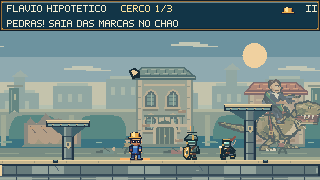
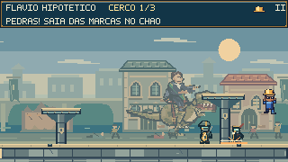

Preparação, ataque e resposta
Cinco trechos pelos controles normais, sem áudio nesta prévia. Feka provoca os ataques simples, as duas combinações e as viradas, atravessando os trechos sem morrer enquanto pedras e outros guardas permanecem ativos.
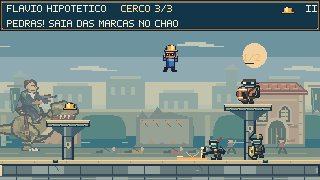
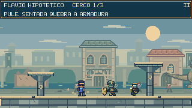
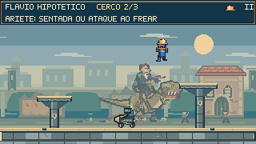
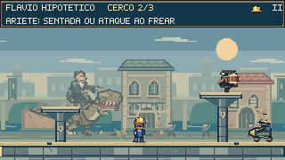
Três atos, um confronto
- A ponte do impossível. Vãos, caixas de carga e duas alturas de percurso. A rota elevada oferece moedas e capacete; seus apoios também caem quando a ponte desaba.
- Cerco ao pátio. Sete guardas em três ondas. O cavaleiro dispara contra NPCs e o dinossauro derruba fachadas ao fundo; pedras anunciadas alcançam a arena.
- O último lacre. Três fases com rajadas, investidas, mordidas, saltos e caudadas. As colunas, as sacadas e os cabos oferecem respostas diferentes aos ataques.
Ponte, pátio e portão
Quadros da partida com os controles normais. A cidade aparece em camadas, enquanto apoios, quedas e mecanismos permanecem ligados à geometria jogável.
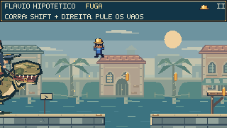
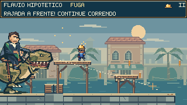
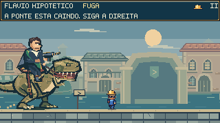
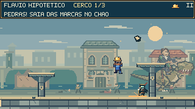
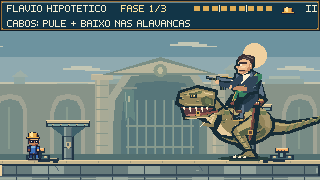
Materiais e poses
Controles e retomada
← → ou A D mover · Shift correr · Espaço pular · ↓ no ar sentada · Esc pausa · R retomar o trecho.
As retomadas preservam o ato alcançado e a fase do duelo. O encontro bônus deixa o progresso da campanha intacto.
Conferido no jogo
67 testes passaram e o build de produção foi concluído. O replay de aproximadamente 112 segundos percorre os três atos até a vitória, incluindo uma morte e retomada. Cinco percursos adicionais provocam escudo, arcos, combinações e viradas, sem mortes. Os testes conferem separação, alcance do pátio, apoio nas sacadas, avisos completos, interrupções, recuperação, continuidade das poses e pausa, além das rotas, câmera e mecanismos do encontro.
Verificação no navegador e no celular · Partida completa · Ataques dos guardas por controles nativos · Áudio da prévia